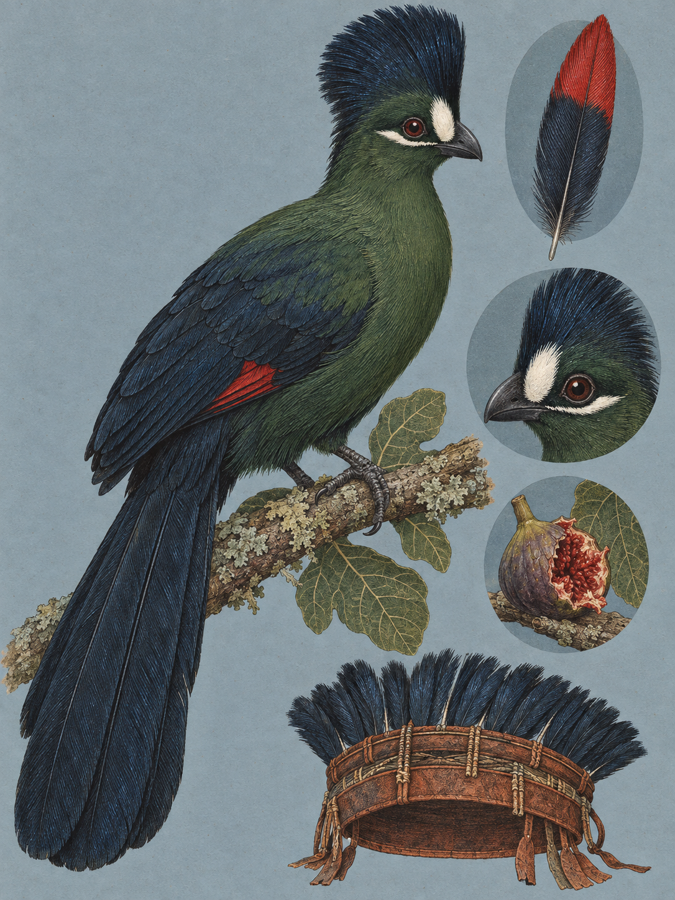

NAIROBI
Tauraco hartlaubi
Swahili: „shorobo buluu“. Maa: „en-jirle“, „en-keiwua“, „en-kurengo“. Kikuyu: „Ngũgũ“.

Im Kronendach des Karura Forest sitzt ein grüner Vogel. Tiefgrün und glänzend sind Rumpf und Brust, darüber steht eine blauschwarze Haube, die ohne Bruch in dunkelblaue Flügeldecken und einen langen, breiten Schwanz übergeht. Vor dem dunklen Auge sitzt ein rein weißer Fleck, dahinter und leicht darunter eine zweite weiße Linie. Rot ist an diesem Vogel nichts zu sehen. Dann hüpft er weit auf den Nachbarast, schlägt zum Ausgleich kurz die Flügel auf, und einen Sekundenbruchteil lang stehen zwei karmesinrote Flächen offen im Licht. Es sind die Handschwingen. In Ruhestellung liegen sie vollständig unter den Deckfedern.
Beschrieben wurde die Art 1884, von dem deutschen Tropenmediziner und Naturforscher Gustav Adolf Fischer und dem Ornithologen Anton Reichenow. Die Beschreibung erschien im Journal für Ornithologie, Band 32, Seite 52, damals noch unter dem Protonym Corythaix hartlaubi. Der Gattungsname Tauraco geht auf westafrikanische Sprachwurzeln zurück. Das Artepitheton ehrt Gustav Hartlaub, 1814 bis 1900, einen deutschen Arzt und Ornithologen, der maßgeblich zur afrikanischen Ornithologie beitrug. Wie die ostafrikanischen Turakos untereinander verwandt sind, klärte erst die jüngere Forschung. Durch die Sequenzierung mitochondrialer DNA, konkret der ND2-Haplotypen ostafrikanischer Exemplare, unter anderem vom Mount Kenya, wurden die Artgrenzen, die Phylogenie und die evolutionäre Klassifikation innerhalb der Musophagidae entschlüsselt.
Bei den Kikuyu heißt der Vogel Ngũgũ. Ein zweiter Name, der ihm gern zugeschrieben wird, gehört einem anderen Vogel: kulukulu stammt aus der Sprache der Giriama und bezeichnet dort den Fischerturako, Tauraco fischeri. Für den Seidenturako ist in Giriama kein Name belegt, in Samburu und Kamba ebenso wenig. Die Namen auf Swahili und in Maa sind dokumentiert, ihre wörtlichen Bedeutungen nicht. Was die Wörter heißen, steht in den linguistischen Aufzeichnungen nirgends.
Das Rot ist der eigentliche Gegenstand dieses Kapitels, und in der Vogelwelt steht es allein. Die Familie der Musophagidae stellt ihre Farbstoffe selbst her, kupferhaltige Porphyrin-Pigmente: Turacin für das Rot, Turacoverdin für das Grün. Beide teilen eine zugrundeliegende Porphyrin-Ringstruktur. Der britische Chemiker Arthur Herbert Church extrahierte Turacin 1869 aus den Federn von vier unterschiedlichen Turako-Arten und veröffentlichte den Befund. In der Fortsetzungsstudie von 1892, erschienen in den Philosophical Transactions of the Royal Society, legte er nach: Turacin ist ein Komplex, der zu etwa 6 Prozent aus reinem Kupfer besteht, beziehungsweise rund 7 Prozent Kupferoxid, gebunden an Uroporphyrin III.
Damit beginnt ein Widerspruch. Turacin ist wasserlöslich, und ein wasserlösliches Pigment müsste im Tropenregen aus den Federn gehen. Es geht nicht heraus. Der Grund liegt in der Chemie des Wassers. In neutralem Wasser und in schwach sauren Lösungen ist Turacin gänzlich unlöslich, leicht löslich dagegen in alkalischen Milieus, etwa in schwachem Ammoniakwasser. Der Niederschlag in den tropischen Bergwäldern Ostafrikas aber ist neutral bis leicht sauer und erreicht unter natürlichen Bedingungen niemals den alkalischen Schwellenwert, den eine Extraktion des Kupfer-Porphyrin-Komplexes verlangt. Also verblasst das Karmesinrot nie. Es bleibt als echtes Rot dauerhaft im Gefieder gebunden.
Eine Beobachtung schien dem lange zu widersprechen. In menschlicher Obhut färbt sich das Badewasser der Turakos rötlich, wiederholt dokumentiert. Church ging dem 1869 nach und konnte belegen, dass es ausschließlich an der künstlichen Alkalinität von aufbereitetem Leitungswasser liegt, die ausreicht, um marginale Mengen des Pigments aus der Federstruktur zu lösen. Der Ausnahmefall braucht ein alkalisches Milieu, und das liefert der Wald nicht.
Der Vogel, der dieses Pigment trägt, ist ein schlechter Flieger. Kurze, stark abgerundete Flügel, ein langer breiter Schwanz, 43,0 cm von der Schnabelspitze bis zur Schwanzspitze, bei einer gemessenen Spanne von 38,1 bis 45,7 cm, im Mittel 232 Gramm. Über weite Strecken fliegt er ineffizient. Er hüpft unruhig und weit von Ast zu Ast. Muss er eine größere Lücke zwischen zwei Kronen überwinden, schlägt er kurz und schnell und geht abrupt in eine lange Gleitphase über. Zu hören ist er: eine raue, sich im Tempo beschleunigende Serie tiefer kow-Laute. Sein Verbreitungsgebiet reicht endemisch über die Bergwälder, üppigen Waldgebiete und bewaldeten Gärten Kenias, Tansanias und Ugandas. Präzise dokumentiert sind Vorkommen im Kisembe Forest im Nairobi National Park, im Karura Forest, in den Ngong Hills, in den Aberdares und in den Bergwäldern am Mount Kenya.
Er ernährt sich primär von Früchten, weshalb die Familie historisch auch Plantain-eaters hieß, Bananenfresser. In der Fortpflanzungszeit erweitert er das Spektrum um Raupen, Motten, Käfer, landlebende Gehäuseschnecken, Nacktschnecken und Termiten, um den Proteinbedarf für Eibildung und Aufzucht zu decken. Die Paare sind monogam und streng territorial und brüten solitär. Die Hauptbrutsaison reicht von April bis Dezember, das Gelege umfasst in der Regel zwei ovale, mattweiße Eier, die Brutzeit 17 Tage, das Küken wiegt bei der Geburt 21 Gramm. In der Balz zeigt das Männchen dem Weibchen durch spezifische Bewegungsmuster genau die roten Flügelflecken, die im Sitzen verborgen sind.
Im Kronendach des Karura Forest sitzt der grüne Vogel wieder still. Die Haube aufgerichtet, der weiße Fleck vor dem Auge, die Flügel eng am Körper. Vom Kupfer in den Handschwingen ist nichts zu sehen. Dann ein weiter Satz auf den nächsten Ast, ein kurzer Aufschlag, zwei rote Flächen im Licht, und wieder nichts.
Was von diesem Vogel in den Händen von Menschen landet, sind die Federn der Haube. Historische und anthropologische Sammlungsdaten belegen, dass die tiefblauen bis blauschwarzen Federn aus Haube und Kopfbereich gezielt für traditionellen Kopfschmuck verwendet wurden. Insbesondere bei den Maasai ist die Integration dieser Federn in einen zeremoniellen Kopfschmuck, der lokal unter dem Begriff en-keiwua geführt wird, dokumentiert. Dasselbe Wort steht in derselben Quelle als einer von drei Maa-Namen für den Vogel selbst. Ob der Schmuck nach dem Vogel benannt ist oder umgekehrt, ist ungeklärt, denn die wörtlichen Bedeutungen sind nirgends aufgeschlüsselt. Wann die Praxis begann, steht in den Quellen ebenfalls nicht, sie ist jedoch Teil der überlieferten materiellen Kultur der Kikuyu und Maasai. Mythen, Rituale außerhalb der Schmucknutzung, Sprichwörter oder eine medizinische Anwendung sind nicht dokumentiert, ebenso wenig Verfolgung oder Konflikte mit Menschen. Die IUCN stufte die Art bei der letzten Überprüfung 2016 als „Least Concern“ ein, also als nicht gefährdet. Im internationalen Handel unterliegt sie den Regeln des Washingtoner Artenschutzübereinkommens und steht dort in Anhang II. Absolute Bestandszahlen für Kenia sind nicht quantifiziert, in Bestandsaufnahmen gilt sie als lokal häufig, etwa in der Ol Pejeta Conservancy und in den Restwäldern Nairobis.
Wo und wann: Auf unserer Route sind der Karura Forest im Stadtgebiet von Nairobi, die bewaldeten Gärten im Raum Kabete und Westlands sowie der Kisembe Forest im Nairobi National Park die aussichtsreichsten Orte. Die Aktivitäts- und Rufmaxima liegen zwischen 07:00 und 10:00 Uhr sowie zwischen 16:00 und 18:00 Uhr. Abwarten lohnt sich auf zwei Bewegungen: das weite Hüpfen von Ast zu Ast, bei dem die Flügel zum Ausgleich kurz aufgeschlagen werden, und den Ortswechsel zwischen zwei Baumkronen.
Brennweite: 100 bis 400 oder 150 bis 600. Das 45 mm und das 26 bis 60 sind für ihn ungeeignet und bleiben der Waldstruktur des Kisembe Forest vorbehalten.
Bild-Idee: Der übliche Fehler ist, auf den sitzenden Vogel zu warten. Im Sitzen presst er die Flügel an den Körper, und das Bild zeigt einen grün-blauen Vogel ohne das eine Merkmal, um das es geht. Gesucht ist der aufgeschlagene Flügel im Moment des Sprungs, die roten Handschwingen offen gegen das grüne Blätterdach.